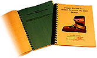
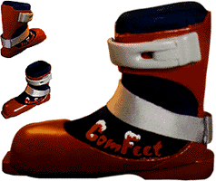
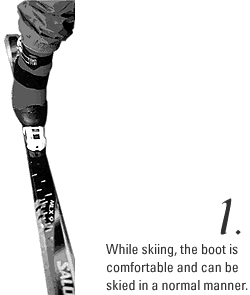
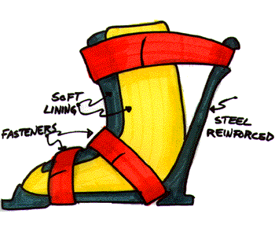
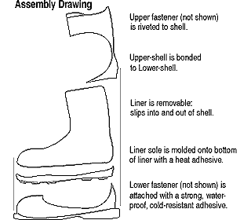

This project was my undergraduate senior thesis, which basically means that I spent all semester on it including writing an extensive report to document my design process. This page takes bits and pieces from the big report.
Foot pain caused by improper boot fit is a big problem for skiers, especially those who rent boots (many of whom are first-time skiers). If people experience boot pain while skiing, they may not want to ski again, thus hurting the entire ski industry. Boot-makers currently employ devices to adjust or custom-fit their boots, but these methods are unsuitable for rental use because of their cost and individuality. Additionally, walking in ski boots is cumbersome and tiring. My objective was to design a rental-oriented ski boot that will conform to the foot of any user, thus providing comfort.
*The date of invention of this design has been recorded March 19, 1997.
Research Methods
Primary:
Interviews: user biomechanics information; materials & processes.
Functional Model: (unskiable) entry/exit of liner; scenarios.
Sketches: concept exploration.
Task Analysis: ski boot physical requirements.
Taxonomies: organizing and relating information.
Testing: color and logo user preferences.
Secondary:
Books: ASTM standards; materials & processes.
Catalogs: materials & processes; concept references.
CD-ROM Database: boot structure and ACL injury; materials & processes.
Internet: current products and gear.
On-Line Patent Search: patent search, concept references.
Periodicals: general ski boot information; materials & processes.
Solution

My solution to the problem is to minimize the boots' rigid shell and provide a stretchy, conformable, weatherproof liner that can actually step out of the shell and perform like a comfortable walking boot. The logo and name — ComFeet — indicates comfort, footwear, winter use, and excitement. Shown below is the intended use case scenario.

Sketchwork

Orthographic Drawings

Conclusion
Ideally (for me), bootmakers could use this design as a new paradigm for ski boots. At the very least, some new lines of thought might open for generating alternatives to boot customization. Like the snowboard and in-line skate industry has already learned, the ski boot industry needs to consider that comfort can be provided by methods other than just adjustability and customization.
Mark Smith, author of
Sports and Fitness Equipment Design, predicts that:
Boots are the primary component for comfort. Manufacturers have responded by designing boots that can be put on and taken off easily; that have simplified buckling, customizable fitting mechanisms, and heating elements; and that are easier to walk in... Future trends in boot design will focus on perfecting each of these characteristics while reducing boot weight.
I believe that my concept can fulfill these criteria and lead the way to a new level of comfort and convenience in skiing.
Close this Window